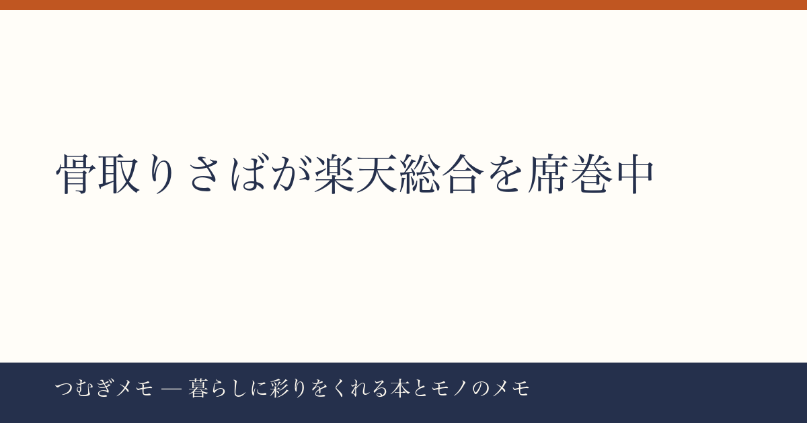

こんにちは、つむぎです。今週の楽天ランキングを眺めていて、ある「食の潮流」があまりにもくっきり見えたので、今日はそれを掘り下げることにしました。
この記事でわかること： 骨取りさばが今これほど売れている理由と、実際に冷凍庫に常備するまでのハードルの下げ方。
今週の要点
- 骨取りさば関連の商品が今週の楽天ランキングに複数同時ランクイン
- 1kg・2kg・国産・北欧産と「バリエーション違い」が並んで売れている
- 半額セールや送料無料施策が重なり、まとめ買いの機運が高まっている
---
今週の楽天総合ランキングで、骨取りさば関連の商品が複数同時にランクインしている。具体的には「無塩・骨取りさば 北欧産 1kg/2kg選べる・半額3,490円」がレビュー37,605件・★4.78という圧倒的な評価で9位に、「骨取りサバ切身 1kg・送料無料2,490円〜」がレビュー19,449件・★4.51で2位と4位に同時ランクインしている。
2位と4位に"ほぼ同じ商品"が並んでいるのは珍しいことで、国産と北欧産、無塩と有塩、1kgと2kgという細かいスペック違いごとに検索・購入されていることを示す。楽天のランキングは購買実績に基づくため、「眺めているだけ」ではなく実際にカートに入っている人が相当数いるということだ。
なぜ今これだけ売れているか。ひとつには、セール期間の集中がある。「26日正午まで半額」「ポイント10倍期間」という時限性のある訴求が複数の商品で重なっており、「どうせ買うなら今」という判断が働きやすい。ただ、それだけでは一時的な売上増で終わる。レビュー数が1万件を超える商品が複数あるということは、リピート購入と口コミ拡散がセール以前から積み上がっていたことを意味する。
実践として今日できること：まず1kgの送料無料・最安値帯（2,490円〜）を試し買いし、自分の家族に「塩気の好み」「加熱方法」が合うかを確かめる。国産か北欧産かで迷うなら、最初はレビュー数の多い北欧産から入るのが失敗しにくい。
---
青魚を家で食べる最大のハードルは「骨」と「においの管理」の二つだと、調理研究の文脈でも繰り返し語られている。骨取り加工の冷凍さばはその両方に対策している。骨の処理は工場で済んでいるため、子どもや高齢者がいる家庭でも出しやすい。においについては、冷凍のまま保存→凍ったまま加熱か流水解凍という工程が、鮮魚を買ってきたときよりもにおいの発生タイミングをコントロールしやすい。
「無塩」という選択肢が売れているのも興味深い。塩分を自分で調整したいという需要、つまり「素材として使いたい」人が増えているということだ。みそ煮や竜田揚げ、サバ缶の代わりに崩してパスタに使うといった応用を考えると、無塩のほうが汎用性が高い。健康意識の高まりとともに「減塩したいけど青魚は食べたい」という層にも刺さっている。
さらに注目したいのは価格帯だ。1kgが2,490円〜3,490円という水準は、スーパーで鮮魚を1切れずつ買うのと比べてもコスト競争力がある。切り身が1kgに何枚入るかは商品によるが、6〜8切れ前後が目安になることが多く、1切れあたりに換算すると家計の青魚ハードルをかなり下げる。
実践として今日できること：冷凍庫の空きスペースを確認してから注文量を決める。1kgの切り身は意外と体積があるため、ジッパー袋に小分けして立てて収納するか、もともとの個包装を活かして縦置きすると霜が付きにくい。購入前に「自分の冷凍庫に何kg入るか」を測ってみるひと手間が、開封後の「しまった」を防ぐ。
---
いくらコスパが良くても、冷凍庫に眠ったまま半年経つのが最悪のパターンだ。買って終わりにしないための仕組みをシンプルに作る必要がある。
おすすめは「週1回・曜日を固定して1切れ使う」という運用だ。月曜の夜はさば、と決めてしまえば献立を考えるコストが下がり、自然と冷凍庫が回転する。調理もフライパンに油を引いて焼くだけなら10〜15分で完成する。みそ、しょうゆ、塩こうじ、カレー粉と漬けだれを週ごとに変えると、同じ食材でも飽きにくい。
買い方の面では、今週のようにセールと送料無料が重なっているタイミングで2kg買いをして冷凍庫に備蓄し、あとは1切れずつ使い続けるというサイクルが家計的にも合理的だ。骨取りさばはそれ自体がほぼ完成した半加工品なので、時間的コストを含めたトータルの「豊かさコスパ」は高い。
参考になる本として、冷凍食材の活用と保存術を体系的に学びたい方には以下を挙げておく。
楽天で『冷凍保存の教科書ビギナーズ』を見る / Amazonで『冷凍保存の教科書ビギナーズ』を見る
実践として今日できること：スマートフォンのカレンダーに「毎週○曜日・さば解凍」とリマインダーを一つ入れる。買っただけで安心してしまう「購入満足の罠」を、仕組みで回避するための最小アクションだ。
---
Q. 北欧産と国産、どちらを選べばいいですか？
今週のランキングでは両方が売れているため、どちらも一定の支持を集めている。北欧産（ノルウェー産）は脂乗りが強い傾向があり、国産は比較的あっさりした風味のものが多いとされる。みそ煮や甘辛い味付けなら北欧産の脂の豊かさが生きやすく、塩焼きや和の薄味仕上げなら国産の方が馴染みやすいという選び方の軸がある。試したことがなければ、レビュー数が多い方から入るのが選択ミスのリスクを下げる。
Q. 無塩と有塩、どちらが使いやすいですか？
料理の汎用性を優先するなら無塩。みそ漬けや甘辛煮など自分で味をつける料理、サバをほぐして混ぜ込む料理に向く。手間を省きたい日に「そのまま焼くだけ」で完結させたい場合は有塩の方が楽。家庭の料理スタイルに合わせて選ぶか、最初は無塩を選んで様子を見るのが無難だ。
Q. 骨取りさばは本当に骨が全部取れていますか？
「骨取り」表示の商品でも、細かい小骨が数本残っているケースは各商品のレビューで散見される。子どもや飲み込みに不安のある方に出す場合は、加熱後に指で軽く確認する習慣をつけておくのが安心だ。今週の楽天上位商品はレビュー件数が多く、骨の残りに関する評価もある程度精査されているため、★4.5以上のものを選ぶことが一つの基準になる。
---
「骨取りさばが楽天を席巻」と書くと単純に聞こえるが、複数の異なる商品ページが同時にランクインしているという事実は、一時的なブームではなく習慣としての青魚需要が底上げされていることを示している。冷凍庫に1袋置くだけで、日々の献立の選択肢が確実に広がる。ぜひ今週のセール期間中に一度試してみてほしい。
なお、このブログ「つむぎメモ」はAIと協力しながら運営している実験的なメディアです。コンテンツの方向性や視点の選択に生成AIを活用しています。気づいた点や感想はX（@tsumugi_memo15）でいつでもどうぞ。
📚 目次へ